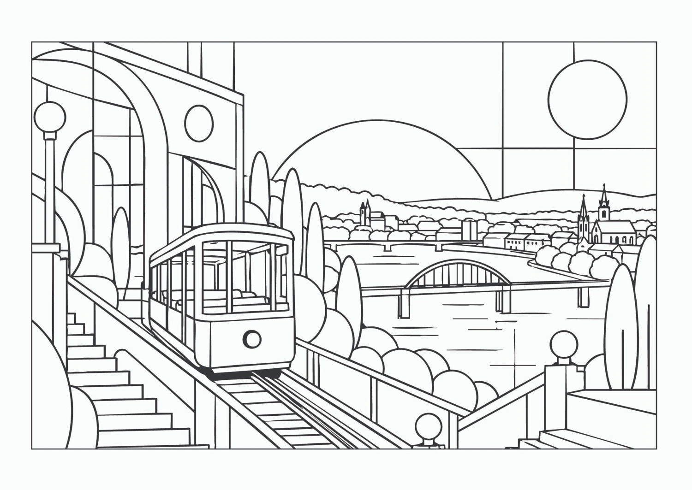
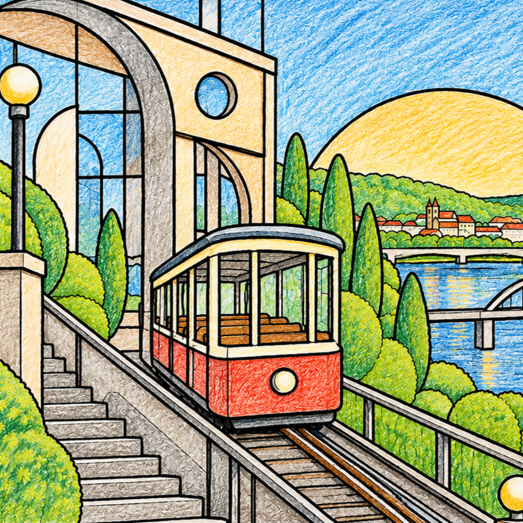

Kaunas Castle
Built in the 14th century, Kaunas Castle is one of Lithuania’s oldest stone castles. It defended the city against the Teutonic Knights and remains a symbol of Kaunas’s medieval history.
Discover the architecture, neighbourhoods and everyday icons of Kaunas through clean Bauhaus-inspired line illustrations, ready for your colours.
From Kaunas Castle to Kaunas Botanical Garden, this edition explores the sights, local culture and visual character of Kaunas through a gallery of line illustrations.
Designed for adults who love travel, architecture and creative downtime, the pages use bold composition and open spaces for mindful colouring.
VIEW THE KAUNAS BOOK

PREVIEW: KAUNAS · LINE ART & COLOUR
Discover the places and details that inspired the illustrations in this edition.
Built in the 14th century, Kaunas Castle is one of Lithuania’s oldest stone castles. It defended the city against the Teutonic Knights and remains a symbol of Kaunas’s medieval history.
Founded in 1944, Žalgiris Kaunas is Lithuania’s most famous basketball club and the 1999 EuroLeague champion. Basketball is an essential part of the city’s identity and sporting pride.
Located near the M. K. Čiurlionis National Museum of Art, Café Kultūra is a popular meeting place with a creative atmosphere. It reflects Kaunas’s vibrant café culture and artistic community.
First built in the 16th century, Kaunas Town Hall is nicknamed the White Swan for its elegant white tower. It stands at the heart of the historic Town Hall Square.
Built in the late 19th century, this red-brick military complex formed part of the Kaunas Fortress system. Its distinctive architecture reflects the city’s strategic military past.
Construction began in 1934, but the basilica was only consecrated in 2004 after decades of Soviet occupation. Its monumental architecture symbolises Lithuania’s independence and resilience.
Dating from the late 15th century, this striking Gothic building is one of Kaunas’s architectural treasures. Its name refers to Perkūnas, the ancient Baltic god of thunder.
The meeting point of Lithuania’s two major rivers marks the historic birthplace of Kaunas. Today, Santaka Park is a beloved green space offering beautiful riverside views.
Opened in 1935, the Aleksotas Funicular carries passengers up the hillside overlooking Kaunas. From the top, visitors enjoy spectacular views of the Old Town and Nemunas River.
Laisvės Alėja is a 1.6-kilometre pedestrian boulevard leading towards St Michael the Archangel Church, completed in 1895. Together, they form one of Kaunas’s most recognisable cityscapes.
Set inside an authentic interwar apartment, the Art Deco Museum showcases the stylish interiors of 1920s–1930s Kaunas. It celebrates the city’s remarkable modernist heritage and design history.
Established in 1938, the Lithuanian Zoological Gardens is the country’s oldest zoo. Renovated and reopened in 2023, it promotes wildlife conservation and education.
Opened in 1978, Spurginė is a legendary café on Laisvės Alėja, famous for its traditional Lithuanian doughnuts. It remains a nostalgic favourite among generations of Kaunas residents.
Unveiled in 1984, this dramatic memorial commemorates victims of Nazi atrocities during World War II. Its monumental concrete forms make it one of Lithuania’s most powerful places of remembrance.
Established in 1966, this unusual museum displays thousands of devil-themed artworks and folk objects. Its collection originated with Lithuanian artist Antanas Žmuidzinavičius.
Founded in 1662, Pažaislis Monastery is a masterpiece of Lithuanian Baroque architecture. Overlooking the Kaunas Reservoir, it is famous for its magnificent church and annual music festival.
Founded in 1923, Kaunas Botanical Garden is one of Lithuania’s oldest botanical gardens. Part of Vytautas Magnus University, it is known for its historic greenhouses, diverse plant collections and beautiful landscaped grounds.
Explore the Kaunas edition and the wider Page Craft Studio city colouring book collection.